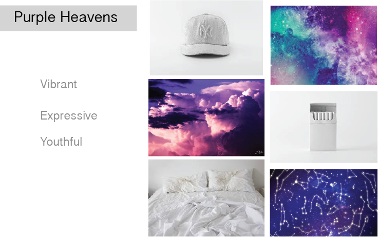
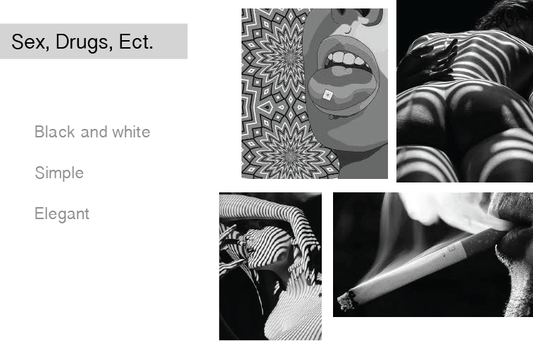

I was not sure of what we could actually do with our knowledge on html and css, so my wire frame is actually quite vague. My essay was only two paragraphs long and I knew that I wanted to use images to break apart the two paragraphs, but I ended up not using the images I said I would in my wire frame.
 My process was to capture the essence of Chance the Rapper himself in the first mood board and then to capture the essence of his music in the second, which I think both mood boards do separately. I think I should have combined the two to get a more cohesive feel, which is what I tried to do in my final website.
This was all completely new to me before this class so it was something you had to jump aboard with, and I think I did. Html was actually more difficult for me to understand in the beginning than css was, at this point. As for translating my wire frame and mood boards into my actual design I skewed from my original ideas to create somethingdifferent that just drew inspiration from my brain-storming.
In future projects I would put forth more effort into my brain-storming with hopes that it will help more with my design. Overall I think this was a really fun project and I like the way everything turned out.